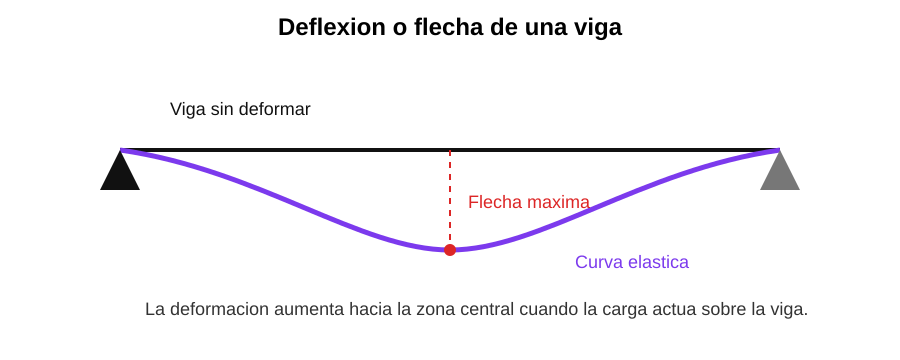

Tema 6. Flexión y Propiedades Geométricas de Secciones
Capacidad: Analiza el comportamiento de un elemento estructural sujeto a flexión. Calcula propiedades básicas de secciones y reconoce fibras comprimidas y traccionadas.
Propósito: Interpretar la flexión de una viga y comprender la importancia del eje neutro y de la forma de la sección.
Desarrollo conceptual
Cuando una viga se flexiona, unas fibras se traccionan y otras se comprimen. Entre ambas se encuentra el eje neutro, donde el esfuerzo es aproximadamente cero.
Definiciones clave
- Flexión: deformación curvada.
- Eje neutro: zona sin esfuerzo de flexión.
- Fibra extrema: parte más alejada del eje neutro.
- Momento de inercia: propiedad geométrica ligada a la resistencia.
Comparación técnica
| Zona traccionada | Zona comprimida |
|---|---|
| Se alarga | Se acorta |
| En una cara | En la cara opuesta |

Gráfico 1: el esfuerzo es cero en el eje neutro y aumenta hacia las fibras extremas.

Gráfico 2: la curva elástica representa la deformación de la viga.
Ejercitario
- Define eje neutro.
- Explica por qué las fibras extremas reciben mayor esfuerzo.
- Dibuja una sección rectangular y marca tracción, compresión y eje neutro.
- Explica cómo influye la forma de la sección en la resistencia.